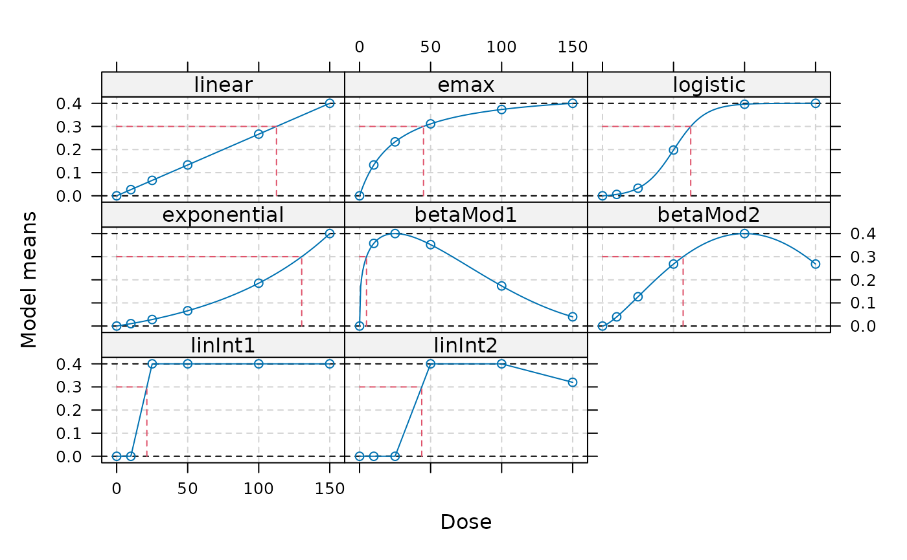

Calculate dose estimates for a fitted dose-response model (via fitMod(), bFitMod()) or maFitMod()) or a Mods() object
Source: R/Mods.R
targdose.RdThe TD (target dose) is defined as the dose that achieves a target effect of Delta over placebo (if there are multiple such doses, the smallest is chosen):
$$TD_\Delta = \min \{x|f(x) > f(0)+\Delta\}$$
If a decreasing trend is beneficial the definition of the TD is
$$TD_\Delta = \min \{x|f(x) < f(0)-\Delta\}$$
When \(\Delta\) is the clinical relevance threshold, then the TD is similar to the usual definition of the minimum effective dose (MED).
The ED (effective dose) is defined as the dose that achieves a certain percentage p of the full effect size (within the observed dose-range!) over placebo (if there are multiple such doses, the smallest is chosen). $$ED_p=\min\{x|f(x) > f(0) + p(f(dmax)-f(0))$$
Note that this definition of the EDp is different from traditional definition based on the Emax model, where the EDp is defined relative to the asymptotic maximum effect (rather than the maximum effect in the observed dose-range).
ED or TD calculation for bootstrap model averaging (maFit) objects is based on first calculating the pointwise median dose-response curve estimate. Then calculating the dose estimate based on this curve.
Arguments
- object
An object of class c(Mods, fullMod), DRMod, bFitMod or maFit
- Delta, p
Delta: The target effect size use for the target dose (TD) (Delta should be > 0).
p: The percentage of the dose to use for the effective dose.
- TDtype, EDtype
character that determines, whether the dose should be treated as a continuous variable when calculating the TD/ED or whether the TD/ED should be calculated based on a grid of doses specified in doses
- direction
Direction to be used in defining the TD. This depends on whether an increasing or decreasing of the response variable is beneficial. In case of ED calculation only needed for maFit objects.
- doses
Dose levels to be used if TDtype or EDtype are equal to "discrete". Needs to include placebo, and may not exceed the dose range of the model(s) provided in object.
Examples
## example for creating a "full-model" candidate set placebo response
## and maxEff already fixed in Mods call
doses <- c(0, 10, 25, 50, 100, 150)
fmodels <- Mods(linear = NULL, emax = 25,
logistic = c(50, 10.88111), exponential = 85,
betaMod = rbind(c(0.33, 2.31), c(1.39, 1.39)),
linInt = rbind(c(0, 1, 1, 1, 1),
c(0, 0, 1, 1, 0.8)),
doses=doses, placEff = 0, maxEff = 0.4,
addArgs=list(scal=200))
## calculate doses giving an improvement of 0.3 over placebo
TD(fmodels, Delta=0.3)
#> linear emax logistic exponential betaMod1 betaMod2
#> 112.500000 45.000000 62.095220 130.265330 4.880978 56.762044
#> linInt1 linInt2
#> 21.250000 43.750000
## discrete version
TD(fmodels, Delta=0.3, TDtype = "discrete", doses=doses)
#> linear emax logistic exponential betaMod1 betaMod2
#> 150 50 100 150 10 100
#> linInt1 linInt2
#> 25 50
## doses giving 50% of the maximum effect
ED(fmodels, p=0.5)
#> linear emax logistic exponential betaMod1 betaMod2
#> 75.000000 18.750000 50.215409 104.517639 1.255838 37.337384
#> linInt1 linInt2
#> 17.500000 37.500000
ED(fmodels, p=0.5, EDtype = "discrete", doses=doses)
#> linear emax logistic exponential betaMod1 betaMod2
#> 100 25 100 150 10 50
#> linInt1 linInt2
#> 25 50
plot(fmodels, plotTD = TRUE, Delta = 0.3)
